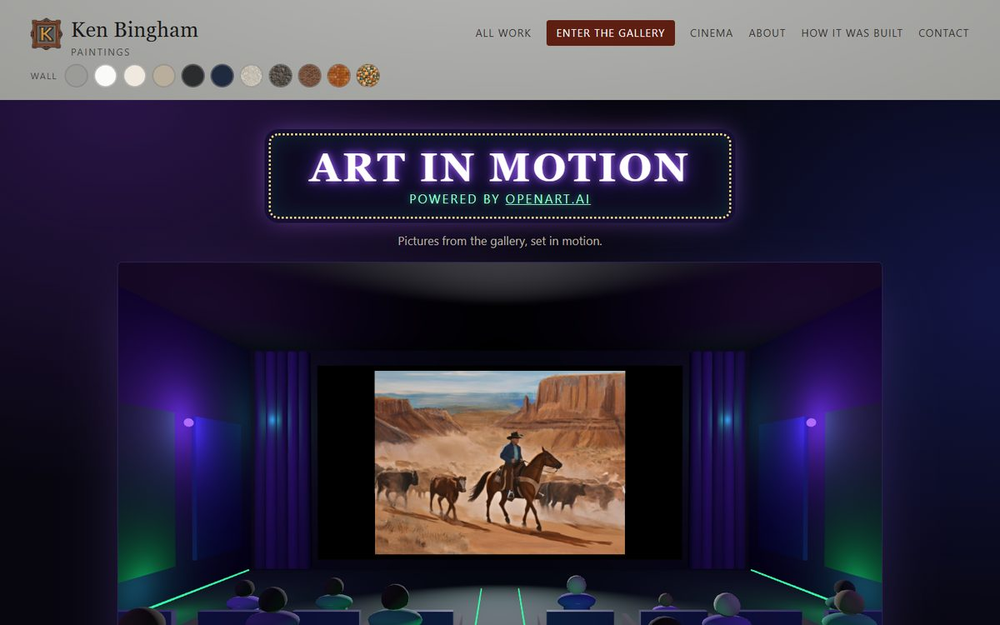
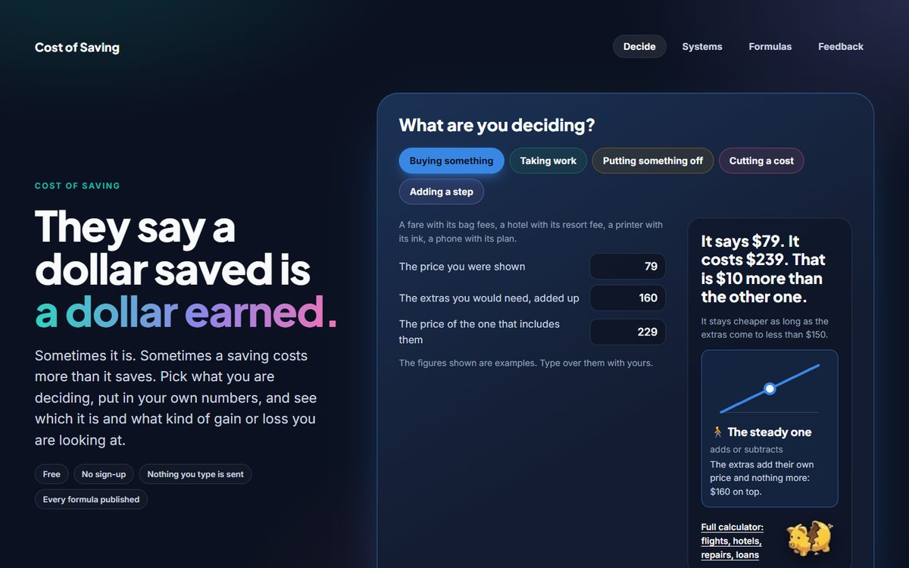

What comes out depends on what goes in.
Two people can use the same AI on the same day and get very different work back. The tool did not change between them. What they gave it did.
I do not train the AI. That word has a real meaning, and it belongs to the people who build the model. I direct it and I conduct it. What I put into it is my own: my philosophy, my values, my conditions, my guardrails, and my personality.
When I tell it to take something in, I am not reprogramming anything. The model stays as its builders made it, and no one else's instance is affected. I am only shaping the one in front of me. A session forgets everything when it ends, so I write my direction down in plain text files that it reads at the start of the next one.
Most portfolios show the result. This page shows the other end: the instructions I load before any work starts, and the actual messages I typed to get two things built. You can open both results and judge the input by the output.
Three parts, and only one is mine
An AI is the part in the middle. It does work on whatever it is handed. It cannot supply the purpose, the audience, or the standard for "done". Those have to come in from the left.
What it is for, who will use it, what must stay true, and what I will not accept.
Writes the code and the tests, runs them, and reports what it did and did not check.
A working thing on a live address that a stranger can open and use.
Before the first message
These lines are quoted from the instruction file that loads into every session. I wrote it, and I revise it when something goes wrong. The AI reads it before it reads my request.
This is direction, not commands. A command executes the same way regardless of context. Direction orients judgment and then requires it.
Why it is there: I want the AI to think about the job, so that I can see its thinking and correct it.
Not a yes-man. Everything is tested. Nothing is accepted as truth until it is verified.
Why it is there: an assistant that agrees with everything gives me speed in the wrong direction.
It is okay to say "I don't have all the answers." Say so plainly rather than fill the void.
Why it is there: a confident guess looks exactly like a fact until someone relies on it.
Mark whether a command was run by me or is for Ken to run. Never present un-run steps as done.
Why it is there: "it should work" and "I ran it and it worked" are different statements, and I need to know which one I am reading.
Code must be modular, simple, and never spaghetti. Functions stay small, clean, and focused. Clarity over cleverness.
Why it is there: I have to be able to read what was built, and so does whoever comes after me.
Don't deny anything until there is reason to deny. Don't believe anything until there is reason to believe.
Why it is there: it keeps new ideas open long enough to be tested, and no longer.
Nine messages, one cinema
These are my messages for one feature, in the order I sent them, with only the spelling tidied. None of them contains code. Each one carries a decision.
- How about a gallery cinema? I have some animations of my paintings. They are impressive. The paintings come alive.
- Also give openart.ai credit for animating the images.
- Make sure there are people watching in the cinema too. Make it look like a real gallery cinema, with dark walls in purple, green and indigo.
- On the outside of the cinema, the sign should say "Art in Motion, powered by openart.ai".
- I want the cinema to be at the end of the gallery, just off the digital image room.
- Have lighting similar to real cinemas.
- Have it cycle in all three.
- Right now the button says Pause. It needs to say Play at first, then Pause if you want to stop the motion.
- It is correct now.

What came out: a screening room inside a walk-through 3D gallery, with an audience, cinema lighting, a doorway that cycles through the films, and credit to the service that animated them.
What to notice: the first message is an idea. The next six are about how it should feel to someone standing in it. The eighth is a fault I found by using it. The ninth is the only one that says it is finished, and I am the one who says it.
Eight messages, one front page
The same thing on a different job: the front page of a site of free decision calculators. Again, spelling tidied and nothing else.
- The front page is too busy. It needs to present the problem, a reason to visit and look around.
- Useful right up front. Not just informational, but useful to them.
- Always list the type of gain or loss with the answer, with its graphic.
- I do like the piggy bank too, so that stays.
- I think the most-used case should be first.
- If I was to stumble on this site right now, I would think it was mainly to compare airline fares and charges.
- It should not be opinionated. And I like "a dollar saved is a dollar earned", because this questions that assumption.
- Use the space of the whole page, not the old-fashioned middle of the screen. Golden ratio principles, panels in a color palette, a modern look. It is kind of dull right now.

What came out: a page that opens on a working calculator for five everyday decisions, reports the figures without telling anyone what to conclude, and is backed by 517 automated checks.
What to notice: the sixth message. The page worked and its tests passed. It was still wrong, and the only way to know was to look at it as a stranger would.
The AI does the typing. The input is the engineering.
Purpose comes from a person. None of the messages above could have been written by the tool, because each one depends on knowing who the thing is for.
The standard comes from a person. An AI will hand over something that looks finished. Whether it is finished is a judgment, and I do not delegate it.
Short is fine. Vague is not. My messages are a sentence or two, typed fast. They work because each one says exactly one thing that has to change, and why.
It still gets things wrong. Good input lowers the error rate. It does not remove it, which is why everything is run and checked. The failures I watch for are listed on How I direct AI.